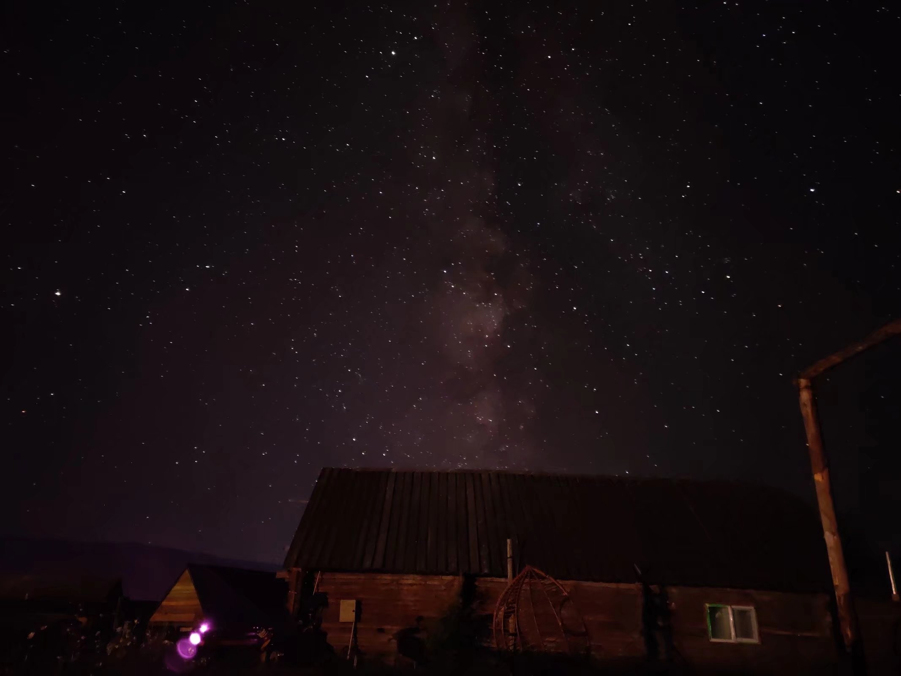

- 2021-07-19 周一
- 文章
如此优美的景色，不配以一段精心撰写的文字，想来有些过意不去。虽然多日未动笔，已有些生涩，我也想做些随性的记录。
此地昼有崇山峻岭，茂林修竹，清流激湍，映带左右；夜有星辰璀璨，银河倾泻，仙女星云，牛女木土。白天也许是见得多了，望见美景心中除却开阔雀跃之外，或许没什么其他情感。刚刚特地在凌晨时分、冒着山间严寒出来看星星，内心之震撼，难以言表。幸运的是，没有云，没有月，抬头仰视，竟没有一片地方不是被星星占据，银河从来没有看得如此真切。
如果说城市的天空，是将最亮的那几颗星星筛选了出来，那这片原始的星空显然更加包容，哪怕是黯淡的星星也能占有一席之地。只可惜这座大城市，并不能容下我这颗稍暗的星星。但转念一想，我又为何要与一众最亮的星星挤占同一片天地呢？山间这块偏僻的角落，黯淡的星星说不准也能发出并不耀眼、但却夺目的光芒。又或许我也不曾在意，要在哪片星空，发出怎样的光，我为何又一定要落入某个评价标准，来给所有的星星分个三六九等呢？
思绪万千，却又归入沉默，星空就是能以如此强大的吸引力，让人暂时忘却世间的一切烦扰。我一直幻想自己能像风景画中一样，在夜间坐在飞机的机翼上，飞掠城市暗橙色的灯光，以旁观者的身份仰观宇宙天象，俯察人间百态。可惜我订了白天的飞机，阳光耀眼，人声喧哗，再加上旅途短暂，我来不及也没兴致写点什么。其实我一直都希望能够冷静地旁观社会的一切光明与阴影，但却始终无法保持一种距离感，现实几乎总是把我拖入一个又一个泥沼当中，不做出判断，便要堕入深渊。可人间的是非对错又能有多重要呢？在同一片星空下，我们同样终将腐朽，我们只是各自按照自己的内心，践行着各自自诩的正义罢了。哪怕部分人心中的正义有所重叠，但谁又能保证这种正义不是一种随波逐流、或是一种更大层面上的利己主义呢？我们整天振臂高呼，怒斥不合理之事，但其中又有多少，只是人类认知局限性的受害者呢？
有些问题不需要答案，或是过于显然、或是与我们生活毫不相干。乐观和悲观，相对和绝对，不过是视角不同条件不同罢了。我不愿继续多想，星空让我再次平静。相比人类而言，星星便是不朽。我想，不论我走到哪，星星都永远在那；不论人类走到哪，星星都永远在那。
这或许就是星空的迷人之处吧。

2021年7月19日 凌晨